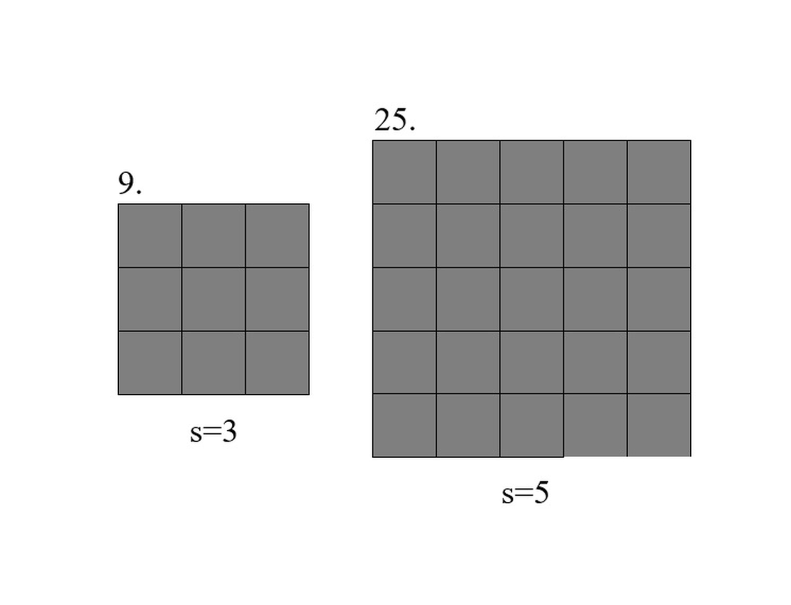
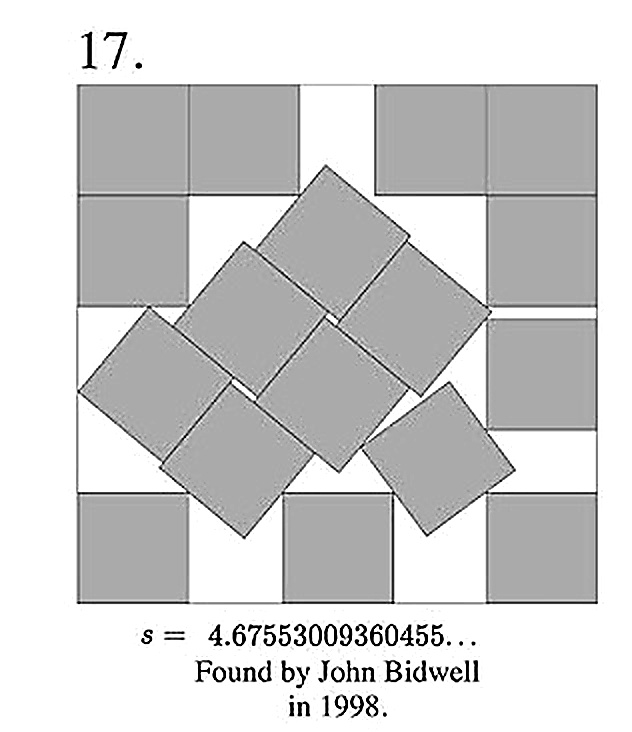

The Problem
At its simplest form, a packing problem aims to find the most efficient packing of some number of objects into a container. Efficiency can be measured by minimizing the amount of unused area or minimizing the size of the container.
For now, we restrict ourselves by considering: given n many unit squares, what is the smallest square we can construct that contains them all?
Simple Cases: n = 9 and n = 25
When n is a perfect square, things behave very nicely. If n = 9, we can arrange the squares in a 3 by 3 grid. Intuition tells us this is the most efficient packing and the smallest square that contains them has a side length of 3. Indeed, if we were to shrink the containing square any further, it would force our filling squares to overlap. Inspection also shows us that we have no unused area! The area of the containing square is 3²=9, and we have 9 unit squares for a total filling area of 9.
Similarly, if n = 25, we can arrange them in a 5 by 5 grid. We can quickly extrapolate this pattern and postulate that if we have n = k² many filling squares, the squares fit perfectly into a square grid with side length k.

The Case n = 17
When we have 17 squares, the picture changes completely.
There is no obvious square grid, and the best known constructions look much less orderly. Instead of a neat pattern, the arrangement appears irregular and haphazard. This is one of the reasons the problem is so visually compelling: even though the pieces themselves are simple, the optimal arrangement is not.
The best construction is currently an open problem: is our current optimal packing the most optimal packing possible?

The problem is easy to state, easy to draw, and easy to experiment with, but the underlying optimization problem is much deeper than it first appears. The complexity of these problems balloon extremely quickly. Here, we have only covered 2-dimensional squares. In general, we can ask the exact same questions for other shapes such as circles and hexagons, or we can go up in dimensions to spheres, cubes or even 11-dimensional objects! One could spend their entire life working on problems of this flavor.